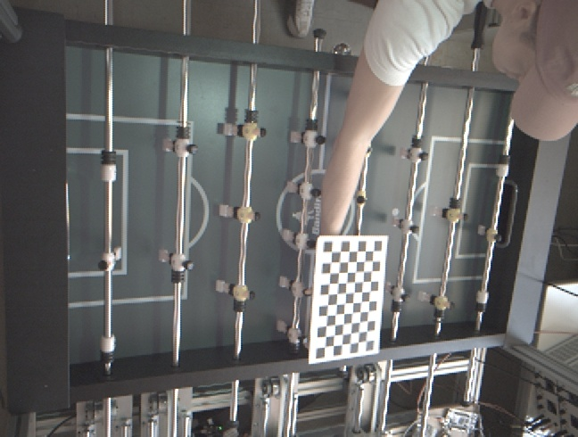
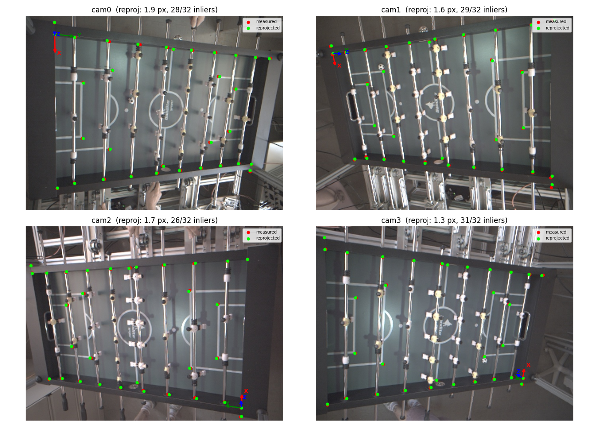
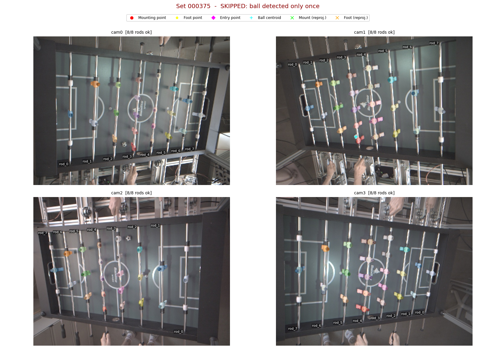
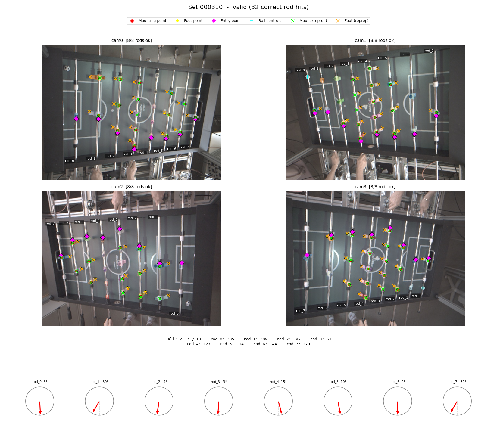
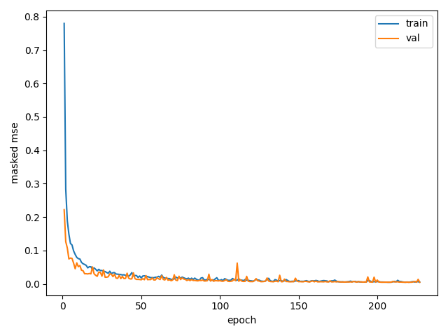
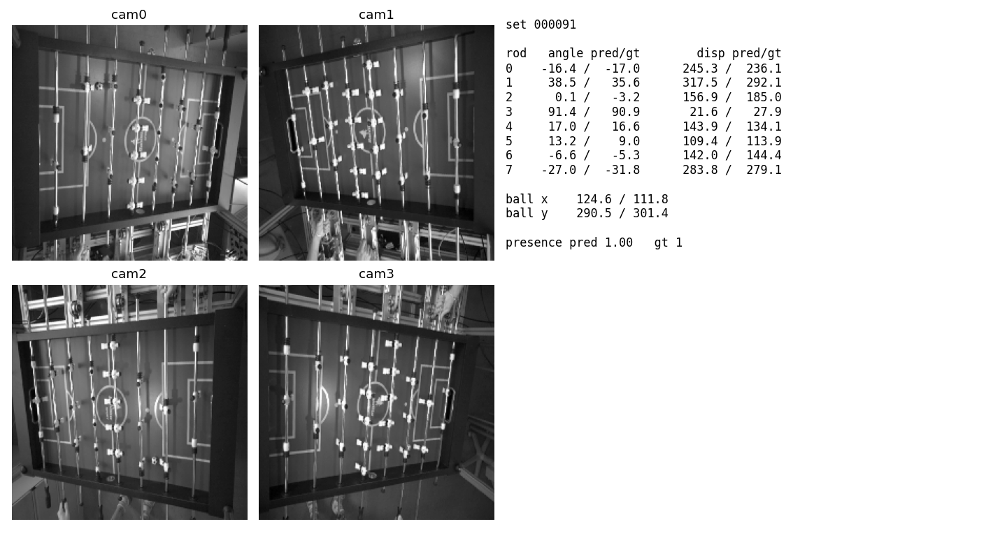

This project aims to determine the rod angles, rod displacements, and ball position of a table soccer table in real time. The system must deliver a new set of values every 10 ms, corresponding to 100 fps. Four cameras are positioned at the corners of the table, looking downward onto the playing field.
Hardware Trigger
To synchronize the four cameras, a hardware trigger was built. It fires all cameras simultaneously, ensuring that each group of four images represents the same point in time.
Calibration
Intrinsic parameters were determined per camera using a checkerboard pattern. Extrinsic parameters were obtained by minimizing the reprojection error across known reference points on the table.

Checkerboard pattern placed on the table for intrinsic camera calibration.

Reprojection error visualized for all four cameras after extrinsic calibration. Reprojection errors are between 1.3 and 1.9 px.
Ground Truth Data
Synchronized image sets were captured via the hardware trigger. Segmentation masks for the ball and figures were generated using SAM3. From each mask, the mounting point, foot point, and entry point of each figure were extracted. These points were triangulated into 3D coordinates using the calibrated cameras, yielding rod angles, displacements, and ball positions as ground truth.
Since SAM3 masks contain errors, each four-camera set was filtered before use. Sets where key points could not be reliably detected across all cameras were discarded.

A skipped set: the ball was only detected in one camera view, making reliable triangulation impossible.

A valid set with 32 correct rod hits across all cameras, including rod angles visualized as dials.
Neural Network
A neural network with a MobileNetV3-Small backbone was trained on the ground truth data. Its input is a single four-channel image formed by stacking the grayscale images from all four cameras. It outputs 27 values: per-rod displacement, per-rod sin/cos (from which the angle is reconstructed via atan2), ball x/y position, and ball visibility as a confidence value.
Inference takes under 1 ms on GPU. The model is efficient enough to meet the 100 fps requirement on CPU alone.

Training and validation loss (masked MSE) over 230 epochs.

Network predictions versus ground truth for rod angles, displacements, and ball position.
Runtime
The final system runs in C++ using ONNX Runtime with the model executing on CPU. In addition to the raw network outputs, the runtime computes derived metrics: goal detection, throw-in detection, and velocity for the ball, rods, and rod angles.